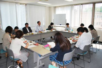

|
|
＜伊藤代表幹事・事務局長あいさつ＞ 農業で頑張るためには国や県の政策が大変重要です。消費者も農業を応援しているので、本日は県の施策を聞かせていただき、意見交換を行えればと思っています。 【議題】 1．学習懇談会 「埼玉県における農業政策」について 講師：埼玉県農林部農業政策課より ＜要旨＞
＜質疑応答＞（○は質問・意見 →回は答） ○全国の耕地面積(約460万ha)の中に休耕地(約39万ha)も入っているのですか。 →入っていません。 ○県内で生産されたものを県内の事業所で加工し、県内で販売するというのは行なっていますか。 →県としても県内の農商工の連携に力を入れているところです。 ○生産者が再生産可能な所得を得られるような補償対策を県に期待しています。 その他にも、意見・質問が出され、活発な意見交換が行われました。 |